Choosing the right regression model. Often this boils down to how you measure your variables
Probability distributions
Data generating process (DGP)
For every DV we are interested in, we have to think about what produces it (i.e. the rules)
Most of the time we have no idea (this is why we are doing the experiment), but it is helpful to think about a simplified approximation of the true, unknown DGP
The goal of fitting a regression model is to use your sample data to estimate the parameters (what defines the shape) of a chosen probability distribution that represent this DGP.
Saw this last time
\[Y_i \sim \mathcal{N}(\mu, \sigma)\]
We assume the DV, \(Y\) has a DGP that is Gaussian normal, made up of \(Y_i\), with a mean of \(\mu\) and a standard deviation of \(\sigma\)
\[Y_i \sim \mathcal{N}(\beta_0 + \beta_1 X_i, \sigma)\] - Almost all the time we will never and can never know what the true DPG looks like. Normal typically serves as our default (based on how we measure or DV).
What are probability distributions?
In stats: mathematical function that describes the likelihood of all possible outcomes for a random variable
For our purposes, we will use them to describe the assumed pattern of variability (distribution) in the outcome variable
Choosing a probability distribution ~= choosing a DGP
Common theoretical probability distributions
Normal Distribution
t-Distribution
F-Distribution
Bernoulli/Binomial Distribution
Negative Binomial
Chi-square distribution
Poisson Distribution
Multinomial (categorical)
Parameters
Each distribution comes with a set of parameters that are used to describe the distribution
Describes the likelihood of all possible outcomes for a random variable. E.g., coin flip. The Bernoulli distribution is the mathematical rule that describes the probability of heads or tails for a coin that has p probability of heads
We can represent these via a Probability Mass Function (PMF) for discrete variables or a Probability Density Function (PDF) for continuous variables.
Probability Mass Function (PMF)
For discrete variables
The PMF gives you the probability of observing exactly a specific outcome
Code
library(ggplot2)# Set the parametersn <-10 ;p <-0.5; x <-0:n# Calculate the probability mass functionpmf <-dbinom(x, n, p)pmf_df <-data.frame(x, pmf)#creates a ggplot object with pmf_df as the data source ggplot(pmf_df, aes(x = x, y = pmf)) +geom_bar(stat ="identity") +ggtitle("PMF of Binomial Distribution") +xlab("Number of Successes") +ylab("Probability") +scale_x_continuous(breaks =seq(0, 10, by =1))
x <-seq(from =-5, to =5, by =0.05)norm_dat <-data.frame(x = x, pdf =dnorm(x))ggplot(norm_dat) +geom_line(aes(x = x, y = pdf)) +ggtitle("PDF of Normal Distribution") +ylab("Density")
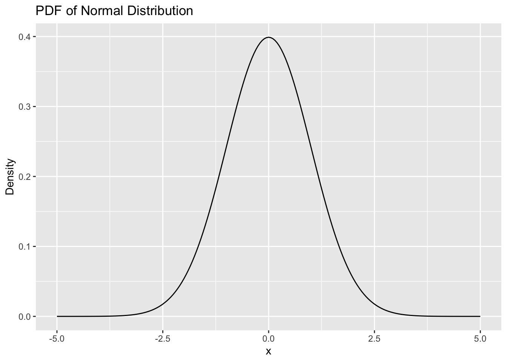
Probability Density Function (PDF)
The value of the PDF at any specific point is not a probability. The probability of observing exactly one value is zero.
Probability is represented by the area under the curve over a range (density)
Cumulative distribtuion function (CDF)
Code
# Set the parametersn <-10;p <-0.5;x <-0:n# Cumulative Distribution Functioncdf <-pbinom(x, n, p)cdf_df <-data.frame(x, cdf)#creates a ggplot object with cdf_df as the data sourceggplot(cdf_df, aes(x = x, y = cdf)) +geom_bar(stat ="identity") +ggtitle("CDF of Binomial Distribution") +xlab("Number of Successes") +ylab("Cumulative Probability")
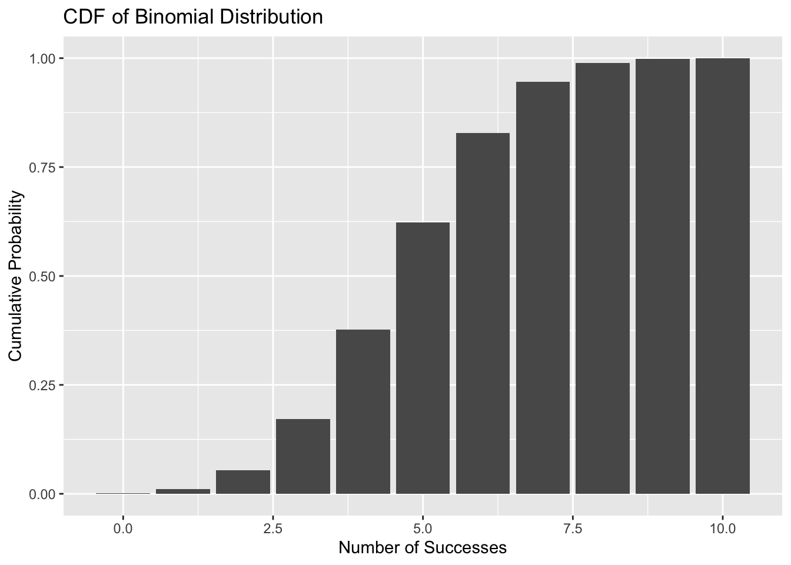
The CDF applies to both discrete and continuous variables. It gives the “running total” of probability. The CDF at a value x is the probability of observing an outcome less than or equal to x.
Will use to calculate p-values and percentiles or quantiles
Code
q <-seq(from =-5, to =5, by =0.1)norm_dat <-data.frame(q = q, cdf =pnorm(q))ggplot(norm_dat) +geom_line(aes(x = q, y = cdf)) +ggtitle("CDF of normal Distribution") +xlab("X") +ylab("Cumulative Probability")
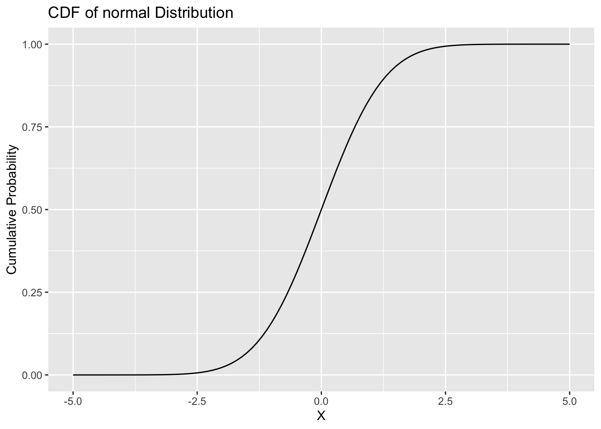
Binomial Distribution
Theoretical probability distribution appropriate when modeling the expected binary outcomes, X, across N trials, with the same probability of success (p) across independent trials.
X = Number of successes p = probability of success n = number of trials
Binomial Distribution
First part of equation tells you the number of ways to select k success from a set of N, where order doesn’t matter. Second tells you the probability of any given sequence. By multiplying the number of ways an event can happen by the probability of any single one of those ways, you get the total overall probability.
3 ways of flipping 1 success with fair coin out of three trials (001,010,100) * .125 = .375
Code
n <-3 ;p <-0.5; x <-0:n# Calculate the probability mass functionpmf <-dbinom(x, n, p)pmf_df <-data.frame(x, pmf)#creates a ggplot object with pmf_df as the data source ggplot(pmf_df, aes(x = x, y = pmf)) +geom_bar(stat ="identity") +ggtitle("PMF of Binomial Distribution, p = .5, N = 100") +xlab("Number of Successes") +ylab("Probability")
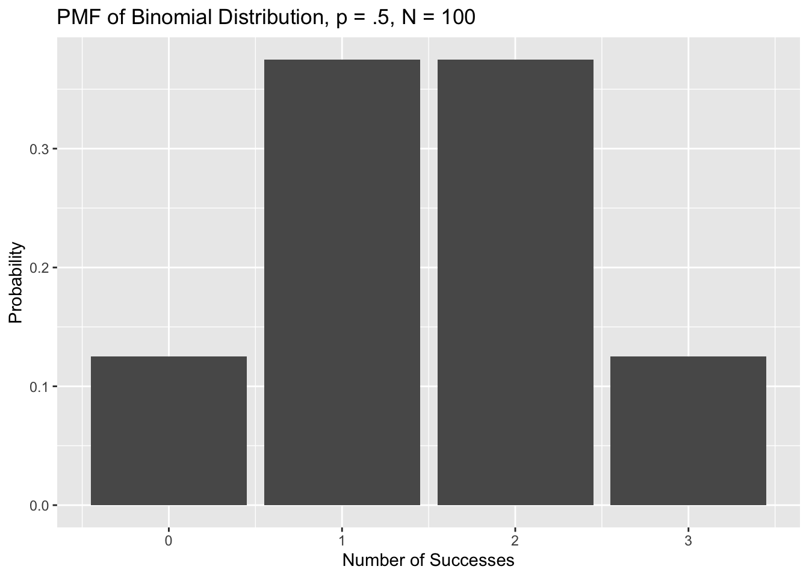
Code
n <-100 ;p <-0.5; x <-0:n# Calculate the probability mass functionpmf <-dbinom(x, n, p)pmf_df <-data.frame(x, pmf)#creates a ggplot object with pmf_df as the data source ggplot(pmf_df, aes(x = x, y = pmf)) +geom_bar(stat ="identity") +ggtitle("PMF of Binomial Distribution, p = .5, N = 100") +xlab("Number of Successes") +ylab("Probability")
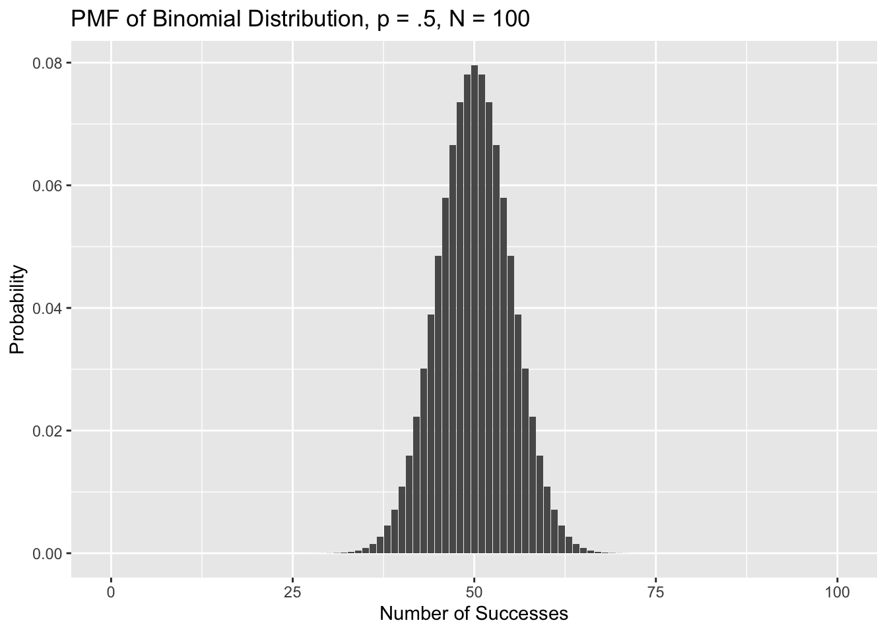
A family of distributions that depends on the parameters
Code
n <-100 ;p <-0.2; x <-0:n# Calculate the probability mass functionpmf <-dbinom(x, n, p)pmf_df <-data.frame(x, pmf)#creates a ggplot object with pmf_df as the data source ggplot(pmf_df, aes(x = x, y = pmf)) +geom_bar(stat ="identity") +ggtitle("PMF of Binomial Distribution, p = .2, N = 100") +xlab("Number of Successes") +ylab("Probability")
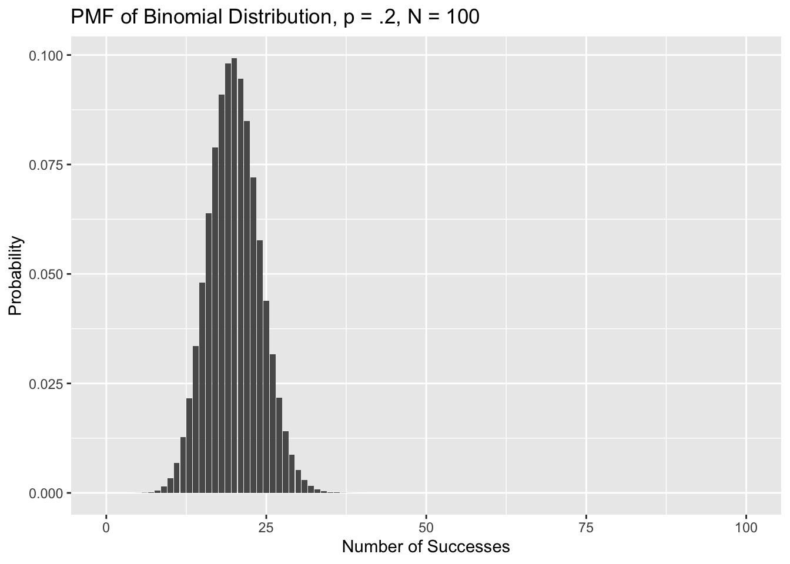
Code
n <-10 ;p <-0.75; x <-0:n# Calculate the probability mass functionpmf <-dbinom(x, n, p)pmf_df <-data.frame(x, pmf)#creates a ggplot object with pmf_df as the data source ggplot(pmf_df, aes(x = x, y = pmf)) +geom_bar(stat ="identity") +ggtitle("PMF of Binomial Distribution, p = .75, N = 10") +xlab("Number of Successes") +ylab("Probability") +scale_x_continuous(breaks =seq(0, 10, by =1))
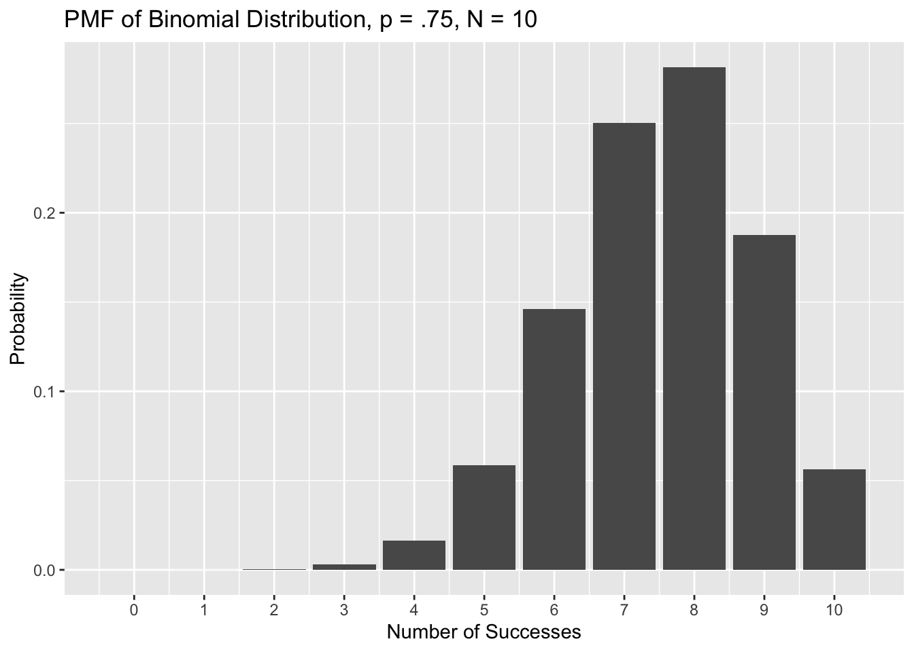
Code
n <-10 ;p <-1/6; x <-0:n# Calculate the probability mass functionpmf <-dbinom(x, n, p)pmf_df <-data.frame(x, pmf)#creates a ggplot object with pmf_df as the data source ggplot(pmf_df, aes(x = x, y = pmf)) +geom_bar(stat ="identity") +ggtitle("10 dice rolls, number of times you get a 6") +xlab("Number of Successes") +ylab("Probability") +scale_x_continuous(breaks =seq(0, 10, by =1))
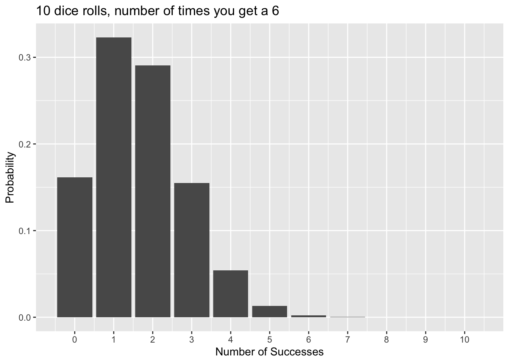
Binomial Distribution
Our mean and variance are related in the binomial distribution
E(X) = Np
Var(X) = Np(1-p)
This will have consequences when we use the binomial as our DGP
History of Binomial
The foundation of probability theory based ways to win gambling! (“problem of points”)
Built upon Pascals’s triangle, which was a way to describe the binomial coefficient (the number of ways k successes can occur in n trials)
Laid the groundwork for setting up expected values \(E(x)\) which are long run averages
Jacob Bernoulli took Pascal’s binomial coefficient and ran with it, using it to set up the Law of Large Numbers (more later; as you increase the size of a random sample, its average will get closer and closer to the population)
R functions
In R, we have names for a number of probability functions. binom for Binomial, norm for normal, etc. With each of these there are specific functions that provide information from that function.
What proportion of outcomes in the sample space that fall at or below a given outcome, say 75%?
Code
n <-20 ;p <-0.5; x <-0:n# Calculate the probability mass functionpmf <-dbinom(x, n, p)pmf_df <-data.frame(x, pmf)#creates a ggplot object with pmf_df as the data source ggplot(pmf_df, aes(x = x, y = pmf)) +geom_bar(stat ="identity") +ggtitle("PMF of Binomial Distribution, p = .5, N = 20") +xlab("Number of Successes") +ylab("Probability") +scale_x_continuous(breaks =seq(0, 20, by =1))
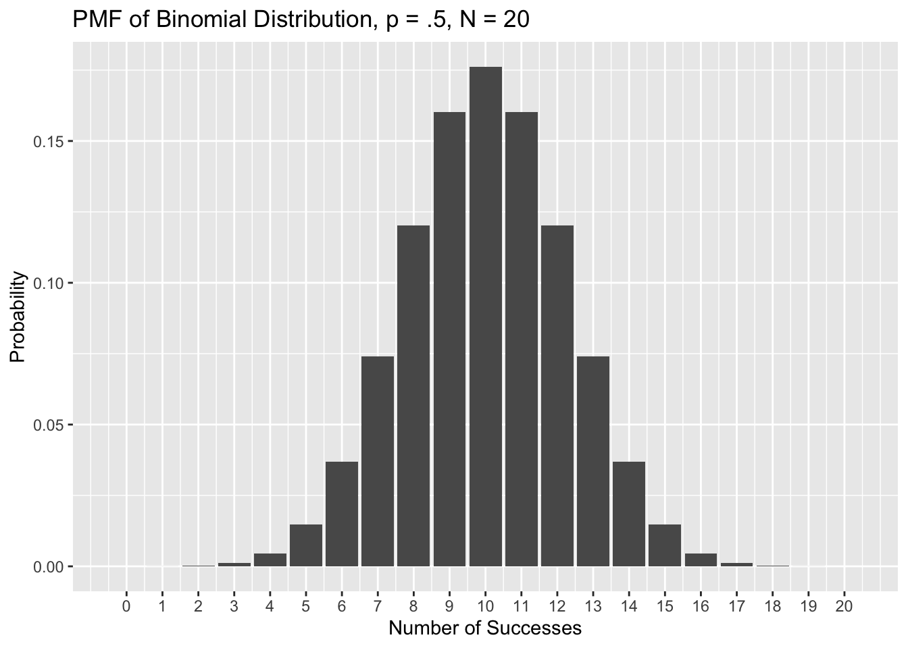
11!
Code
# Set the parametersn <-20;p <-0.5;x <-0:n# Cumulative Distribution Functioncdf <-pbinom(x, n, p)cdf_df <-data.frame(x, cdf)#creates a ggplot object with cdf_df as the data sourceggplot(cdf_df, aes(x = x, y = cdf)) +geom_bar(stat ="identity") +ggtitle("CDF of Binomial Distribution") +xlab("Number of Successes") +ylab("Cumulative Probability") +scale_x_continuous(breaks =seq(0, 20, by =1))
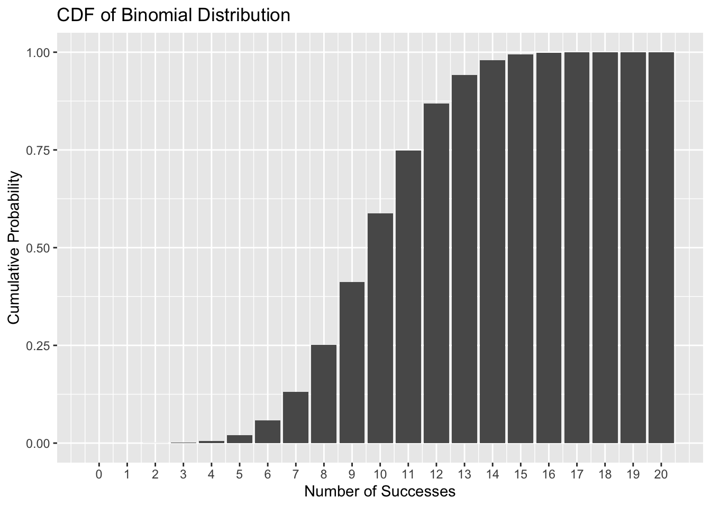
Whereas the dbinom gives you the the value (probability) of the Probability Mass Function (PMF) for a particular X, pbinom uses the Cumulative Mass Function (CMF). It tells you the cumulative probability of getting a certain number of successes or fewer.
Code
#probabilitypbinom(11, size =20, prob = .5)
[1] 0.7482777
dbinom asks: What is the probability of getting exactly X successes (uses PMF)? pbinom asks: What is the probability of getting X successes or fewer (uses CMF)?
qbinom is similar but instead of number of success given, the percent/quantiles are provided. Th
How many successes (or fewer) is associated with the 75% percentile?
#quantileqbinom(p =0.75, size =20, prob =0.5)
[1] 12
Why is this 12 not 11?
qbinom(p =0.7482, size =20, prob =0.5)
[1] 11
rbinom does random draws from the probability distribution. You pick the binomial distribution Size(N) and p, and then how many draws you want from it, n.
The binomial is of interest beyond describing the behavior of dice and coins. For example, suppose I give a 40-item multiple choice test, with each question having 4 options.
I am worried that students might do well by chance alone. I would not want to pass students in the class if they were just showing up for the exams and guessing for each question.
What are the parameters in the binomial distribution that will help me address this question?
Code
n <-40 ;p <-0.25; x <-0:n# Calculate the probability mass functionpmf <-dbinom(x, n, p)pmf_df <-data.frame(x, pmf)#creates a ggplot object with pmf_df as the data source ggplot(pmf_df, aes(x = x, y = pmf)) +geom_bar(stat ="identity") +ggtitle("PMF of Binomial Distribution, p = .25, N = 40") +xlab("Number of Successes") +ylab("Probability") +scale_x_continuous(breaks =seq(0, 40, by =1))
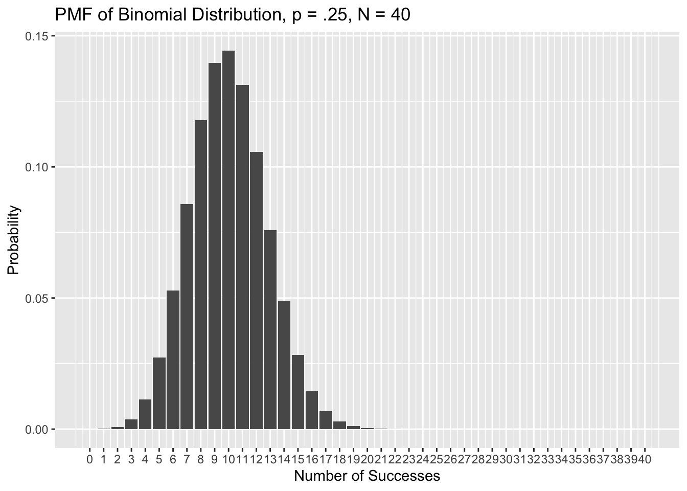
How likely is it that a guesser would score above the threshold (60%) necessary to pass the class by the most minimal standards?
How likely is it that a guesser would score above the threshold (60%) necessary to pass the class by the most minimal standards?
.6*40
[1] 24
The probability of getting 23 questions or fewer correct:
pbinom(q =23, size =40, prob = .25)
[1] 0.9999972
1-pbinom(q =23, size =40, prob = .25)
[1] 2.825967e-06
Bernoulli distribution
\[X \sim \text{Bin}(n = 1,p)\]
\[X \sim \text{Bern}(p)\]
We will use this theoretical probability distribution when our DV comes in 1/0 or yes/no. This is a logistic regression.
\[X \sim \text{Bin}(1, p = \beta_0 + \beta_1 X_i)\]
Code
n <-1 ;p <-0.3; x <-0:n# Calculate the probability mass functionpmf <-dbinom(x, n, p)pmf_df <-data.frame(x, pmf)#creates a ggplot object with pmf_df as the data source ggplot(pmf_df, aes(x = x, y = pmf)) +geom_bar(stat ="identity") +ggtitle("PMF of Bernoulli Distribution, p = .3") +xlab("Number of Successes") +ylab("Probability") +scale_x_continuous(breaks =seq(0, 20, by =1))
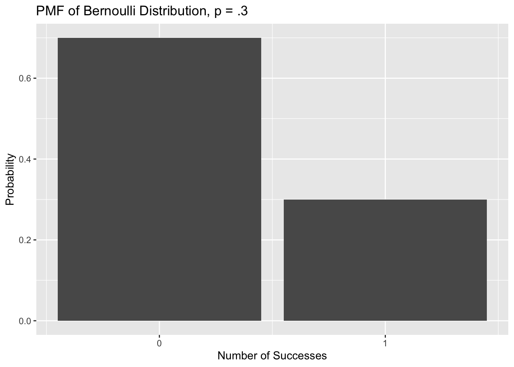
Poisson
What if you have not single success, but counts of successes?
Can be thought of as a binomial that has infinite trials and when occurrence/success is rare (i.e. p is small).
Can think of this as the average “rate” often across time or space.
\[X \sim \text{Pois}(\lambda)\]
\[P(X=x) = \frac{\lambda^x e^{-\lambda}}{x!}\]
Code
lambda <-4k_values <-0:15probabilities <-dpois(x = k_values, lambda = lambda)poisson_df <-data.frame(k = k_values,probability = probabilities)ggplot(poisson_df, aes(x = k, y = probability)) +geom_col() +labs(title =paste("Poisson Distribution (lambda =", lambda, ")"),subtitle ="Probability Mass Function (PMF)",x ="Number of Events (k)",y ="Probability P(X=k)" ) +scale_x_continuous(breaks = k_values)
lambda <-2k_values <-0:15probabilities <-dpois(x = k_values, lambda = lambda)poisson_df <-data.frame(k = k_values,probability = probabilities)ggplot(poisson_df, aes(x = k, y = probability)) +geom_col() +labs(title =paste("Poisson Distribution (lambda =", lambda, ")"),subtitle ="Probability Mass Function (PMF)",x ="Number of Events (k)",y ="Probability P(X=k)" ) +scale_x_continuous(breaks = k_values)
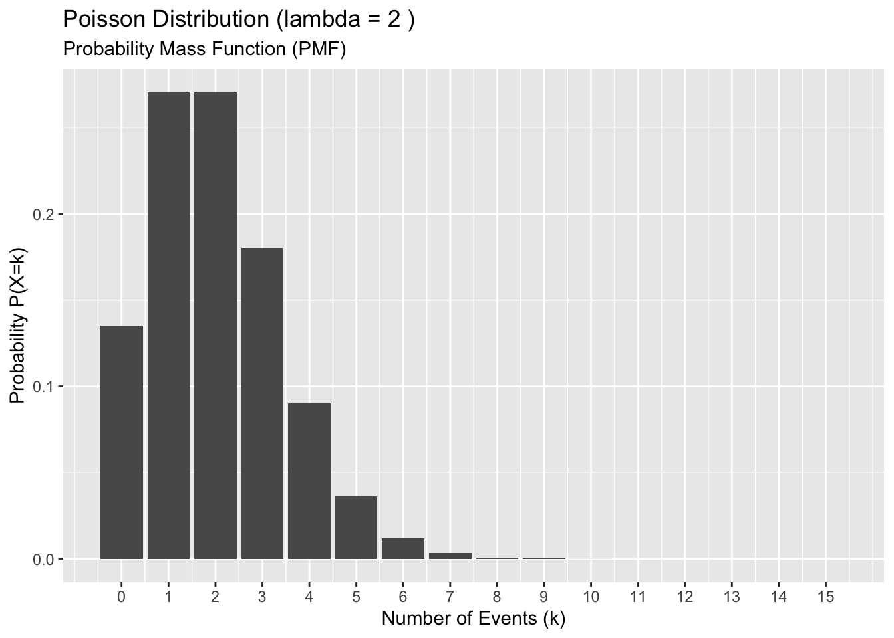
History of Poisson
How many wrongful convictions in France. One of the first instances of social science
Popularized via Prussian soldier donkey deaths. Number of soldiers killed by being kicked by a horse each year in each of 14 cavalry corps over a 20-year period
Negative binomial distribution
The poisson mean must be equal to its variance. Often with counts we get means that are much less than the variance. This is called overdispersion
Overdispersion can happen when the rate is not constant. If soldiers get kicked in the head more on weekends than week days, there will be more variability, but it might not influence the mean.
x <-seq(from =30, to =180, by =0.05)norm_dat <-data.frame(x = x, pdf =dnorm(x, 100,15))ggplot(norm_dat) +geom_line(aes(x = x, y = pdf)) +ggtitle("PDF of Normal Distribution (100,15)") +ylab("Density")
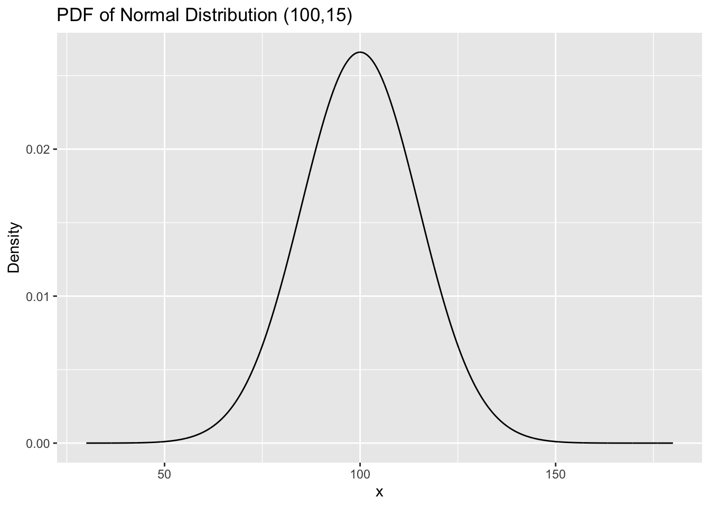
As N increases, the binomial becomes more normal in appearance. This is important (historically) as calculating huge factorials (eg 500!) was time intensive. The normal is much simpler to estimate.
Central Limit Theorem: the sum of a large number of independent random variables will be approximately normally distributed, even if original distributions are not normal.
Central limit theorm, take 1
Code
# Load the required librarieslibrary(ggplot2)library(patchwork)# --- 1. Create a Skewed Population ---# We'll use an exponential distribution, which is very non-normal.population_size <-100000population <-data.frame(value =rexp(population_size, rate =0.5))# --- 2. Set Simulation Parameters ---sample_size <-40# The size of each sample we draw from the populationn_simulations <-5000# The number of samples we will take# Create a vector to store the mean of each samplesample_means <-numeric(n_simulations)# --- 3. Run the Simulation ---for (i in1:n_simulations) {# Draw a random sample from the population my_sample <-sample(population$value, size = sample_size)# Calculate the mean of that sample and store it sample_means[i] <-mean(my_sample)}# Create a data frame of the resultssampling_dist_data <-data.frame(mean = sample_means)# --- 4. Visualize the Results ---# Plot 1: The original, skewed population distributionplot_population <-ggplot(population, aes(x = value)) +geom_density(fill ="lightcoral", alpha =0.8) +labs(title ="1. Population Distribution",subtitle ="Highly skewed (Exponential)",x ="Value", y ="Density") +theme_minimal(base_size =14)# Plot 2: The distribution of sample means plot_sampling_dist <-ggplot(sampling_dist_data, aes(x = mean)) +geom_density(fill ="skyblue", alpha =0.8) +# Overlay a perfect normal curve for comparisonstat_function(fun = dnorm, args =list(mean =mean(sample_means), sd =sd(sample_means)),color ="red", size =1) +labs(title ="2. Distribution of Means from samples",x ="Sample Mean", y ="Density") +theme_minimal(base_size =14)
Warning: Using `size` aesthetic for lines was deprecated in ggplot2 3.4.0.
ℹ Please use `linewidth` instead.
Code
# Combine the plots side-by-sideplot_population + plot_sampling_dist
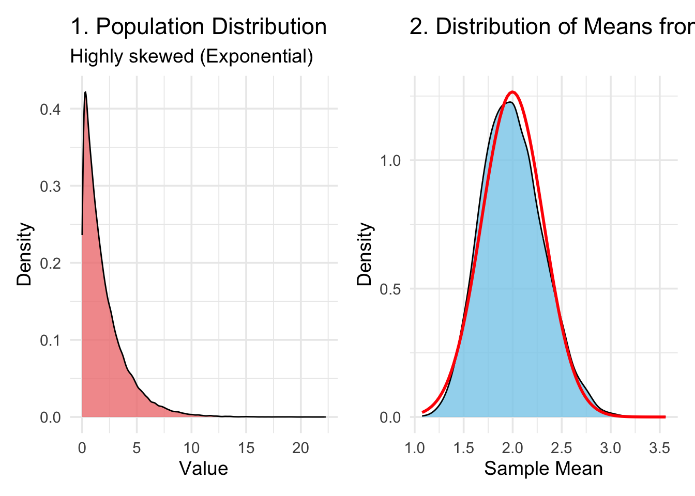
Normal (Gaussian) distrbution
One of the many reasons we like it is because it shows up all the time in nature. Randomness + More randomness leads to normal distribution.
The CLT allows the use of normal distribution methods for statistical inference (like confidence intervals and hypothesis tests), regardless of the underlying population’s shape
# 1. Load the ggplot2 librarylibrary(ggplot2)# 2. Set the parameters for the normal distributionmean_val <-0sd_val <-1# 3. Generate a sequence of x-values for the curvex_values <-seq(mean_val -4* sd_val, mean_val +4* sd_val, length.out =500)# 4. Calculate the probability density for each x-valuey_values <-dnorm(x_values, mean = mean_val, sd = sd_val)# 5. Create a dataframe for plottingnormal_df <-data.frame(x = x_values,density = y_values)# 6. Create the plot with improved labelsggplot(normal_df, aes(x = x, y = density)) +# --- Shaded Regions for the Empirical Rule ---geom_ribbon(data =subset(normal_df, x > mean_val -3*sd_val & x < mean_val +3*sd_val),aes(ymin =0, ymax = density), fill ="lightblue", alpha =0.8) +geom_ribbon(data =subset(normal_df, x > mean_val -2*sd_val & x < mean_val +2*sd_val),aes(ymin =0, ymax = density), fill ="royalblue", alpha =0.8) +geom_ribbon(data =subset(normal_df, x > mean_val -1*sd_val & x < mean_val +1*sd_val),aes(ymin =0, ymax = density), fill ="navyblue", alpha =0.8) +# --- The Curve and Mean Line ---geom_line(color ="black", size =1) +geom_vline(xintercept = mean_val, color ="black", linetype ="dashed", size =1) +# --- Text Annotations (Revised) ---# Label for 68% remains insideannotate("text", x = mean_val, y =dnorm(mean_val, mean_val, sd_val) *0.5, label ="68.26% within 1 SD", size =5, color ="white", fontface ="bold") +# Label for 95% is moved above the curveannotate("text", x = mean_val +1.6* sd_val, y =dnorm(mean_val, mean_val, sd_val) *0.9, label ="95.44% within 2 SD", size =4.5, color ="black") +# Arrow for 95% labelgeom_segment(aes(x = mean_val +1.4* sd_val, y =dnorm(mean_val, mean_val, sd_val) *0.8,xend = mean_val +1.1* sd_val, yend =dnorm(mean_val, mean_val, sd_val) *0.4),arrow =arrow(length =unit(0.2, "cm")) ) +# Label for 99.7% is moved above the curveannotate("text", x = mean_val +2.7* sd_val, y =dnorm(mean_val, mean_val, sd_val) *0.4, label ="99.7% within 3 SD", size =4.5, color ="black") +# Arrow for 99.7% labelgeom_segment(aes(x = mean_val +2.5* sd_val, y =dnorm(mean_val, mean_val, sd_val) *0.35,xend = mean_val +2.2* sd_val, yend =dnorm(mean_val +1.5*sd_val, mean_val, sd_val) *0.2),arrow =arrow(length =unit(0.2, "cm")) ) +# --- Labels and Theme ---labs(title ="Visualizing the 68 / 95.44 / 99.7",x ="Value",y ="Probability Density" ) +theme_minimal(base_size =14) +# Remove the legend for the fill colorstheme(legend.position ="none")
Warning in geom_segment(aes(x = mean_val + 1.4 * sd_val, y = dnorm(mean_val, : All aesthetics have length 1, but the data has 500 rows.
ℹ Please consider using `annotate()` or provide this layer with data containing
a single row.
Warning in geom_segment(aes(x = mean_val + 2.5 * sd_val, y = dnorm(mean_val, : All aesthetics have length 1, but the data has 500 rows.
ℹ Please consider using `annotate()` or provide this layer with data containing
a single row.
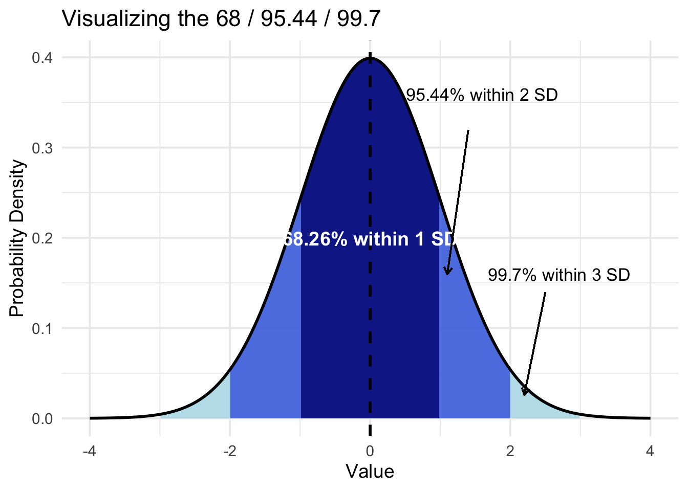
Probabilities are defined as area under the curve
Historically, z-score tables were used to calculate fun things:
Given any score, we can calculate the probability of getting a value greater/less than that
Given a probability p, we can identify the z-score (or score from any normal) at which the proportion of scores below (or above) p falls
Given a probability p, we can identify the z-score at which the proportion of scores that fall above −Z and below Z is equal to p
Instead of using a table in the back of the book we use R functions
pnorm(q =140, mean =100, sd =15)
[1] 0.9961696
pnorm(q =2.666, mean =0, sd =1)
[1] 0.996162
pnorm(q =1.96)
[1] 0.9750021
Code
# 1. Load the ggplot2 librarylibrary(ggplot2)# 2. Define the parameters for the Standard Normal distributionmean_val <-0sd_val <-1cutoff_z <-1.96# 3. Generate a sequence of x-values for the curvex_values <-seq(mean_val -4* sd_val, mean_val +4* sd_val, length.out =500)y_values <-dnorm(x_values, mean = mean_val, sd = sd_val)normal_df <-data.frame(x = x_values, density = y_values)# 4. Calculate the exact probability for the labelprob_area <-pnorm(cutoff_z, mean = mean_val, sd = sd_val)# 5. Create the plotggplot(normal_df, aes(x = x, y = density)) +# Draw the full bell curvegeom_line(color ="black", size =1) +# Add the shaded region corresponding to pnorm(1.96)geom_ribbon(data =subset(normal_df, x < cutoff_z),aes(ymin =0, ymax = density),fill ="royalblue",alpha =0.8 ) +# Add a vertical line marking the cutoff pointgeom_vline(xintercept = cutoff_z, color ="firebrick", linetype ="dashed", size =1) +# Add text to display the calculated area/probabilityannotate("text",x =0, y =dnorm(0, mean_val, sd_val) *0.5,label =paste0("Area = ", round(prob_area, 4)),size =6,color ="white",fontface ="bold" ) +# Add titles and labelslabs(title ="Visualization of pnorm(1.96)",subtitle ="Area under the Standard Normal Curve to the left of Z = 1.96",x ="Z-score",y ="Probability Density" ) +theme_minimal(base_size =14)
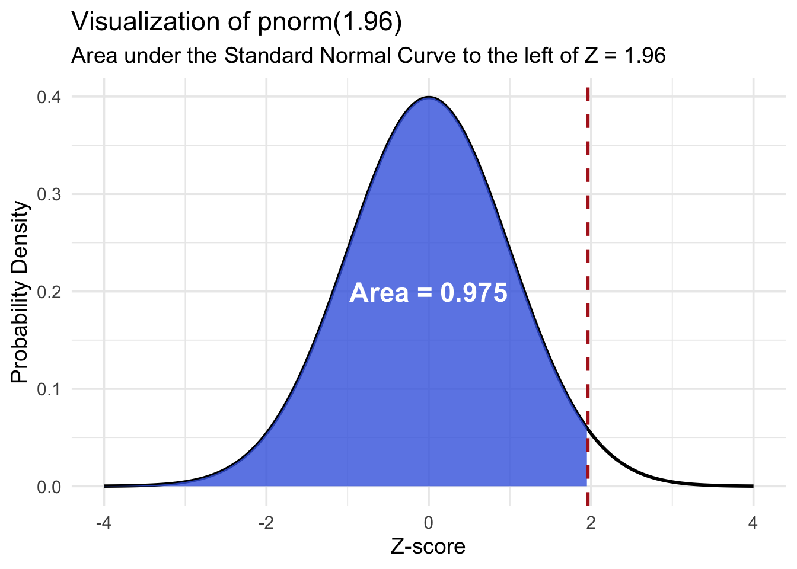
Code
# 1. Load the ggplot2 librarylibrary(ggplot2)# 2. Define the parameters for the Standard Normal distributionmean_val <-0sd_val <-1cutoff_z <-2.666# 3. Generate a sequence of x-values for the curvex_values <-seq(mean_val -4* sd_val, mean_val +4* sd_val, length.out =500)y_values <-dnorm(x_values, mean = mean_val, sd = sd_val)normal_df <-data.frame(x = x_values, density = y_values)# 4. Calculate the exact probability for the labelprob_area <-pnorm(cutoff_z, mean = mean_val, sd = sd_val)# 5. Create the plotggplot(normal_df, aes(x = x, y = density)) +# Draw the full bell curvegeom_line(color ="black", size =1) +# Add the shaded region corresponding to pnorm(1.96)geom_ribbon(data =subset(normal_df, x < cutoff_z),aes(ymin =0, ymax = density),fill ="royalblue",alpha =0.8 ) +# Add a vertical line marking the cutoff pointgeom_vline(xintercept = cutoff_z, color ="firebrick", linetype ="dashed", size =1) +# Add text to display the calculated area/probabilityannotate("text",x =0, y =dnorm(0, mean_val, sd_val) *0.5,label =paste0("Area = ", round(prob_area, 4)),size =6,color ="white",fontface ="bold" ) +# Add titles and labelslabs(title ="Visualization of pnorm(2.666)",subtitle ="Area under the Standard Normal Curve to the left of Z = 2.666",x ="Z-score",y ="Probability Density" ) +theme_minimal(base_size =14)
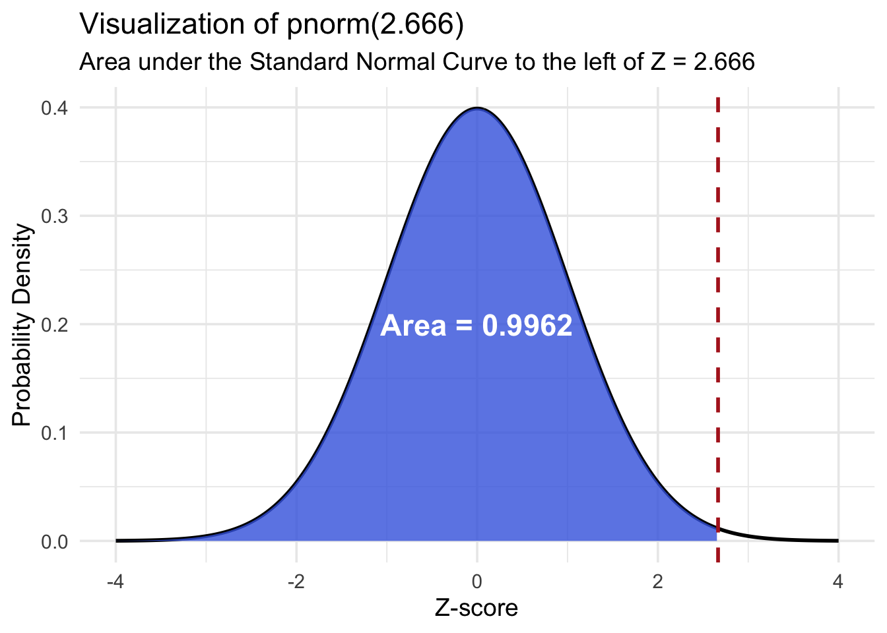
What is dnorm referring to?
dnorm(1.96)
[1] 0.05844094
dnorm(0)
[1] 0.3989423
A density, not a probability.
Code
library(ggplot2)mean_val <-0sd_val <-1point_z <-1.96x_values <-seq(mean_val -4* sd_val, mean_val +4* sd_val, length.out =500)y_values <-dnorm(x_values, mean = mean_val, sd = sd_val)normal_df <-data.frame(x = x_values, density = y_values)density_at_point <-dnorm(point_z, mean = mean_val, sd = sd_val)ggplot(normal_df, aes(x = x, y = density)) +geom_line(color ="black", size =1) +geom_segment(aes(x = point_z, y =0, xend = point_z, yend = density_at_point),color ="firebrick",size =1.2 ) +geom_point(aes(x = point_z, y = density_at_point), color ="firebrick", size =4) +annotate("text",x = point_z -0.1, y = density_at_point +0.1,label =paste0("Height = dnorm(1.96)\n≈ ", round(density_at_point, 4)),size =5,hjust =0# Right-justify the text ) +geom_curve(aes(x = point_z -0.2, y = density_at_point +0.08, xend = point_z, yend = density_at_point +0.01),arrow =arrow(length =unit(0.2, "cm")),curvature =0.3 ) +labs(title ="Visualization of dnorm(1.96)",subtitle ="Showing the Density (Height) of the Curve at Z = 1.96",x ="Z-score",y ="Probability Density (Height)" ) +theme_minimal(base_size =14)
Warning in geom_segment(aes(x = point_z, y = 0, xend = point_z, yend = density_at_point), : All aesthetics have length 1, but the data has 500 rows.
ℹ Please consider using `annotate()` or provide this layer with data containing
a single row.
Warning in geom_point(aes(x = point_z, y = density_at_point), color = "firebrick", : All aesthetics have length 1, but the data has 500 rows.
ℹ Please consider using `annotate()` or provide this layer with data containing
a single row.
Warning in geom_curve(aes(x = point_z - 0.2, y = density_at_point + 0.08, : All aesthetics have length 1, but the data has 500 rows.
ℹ Please consider using `annotate()` or provide this layer with data containing
a single row.
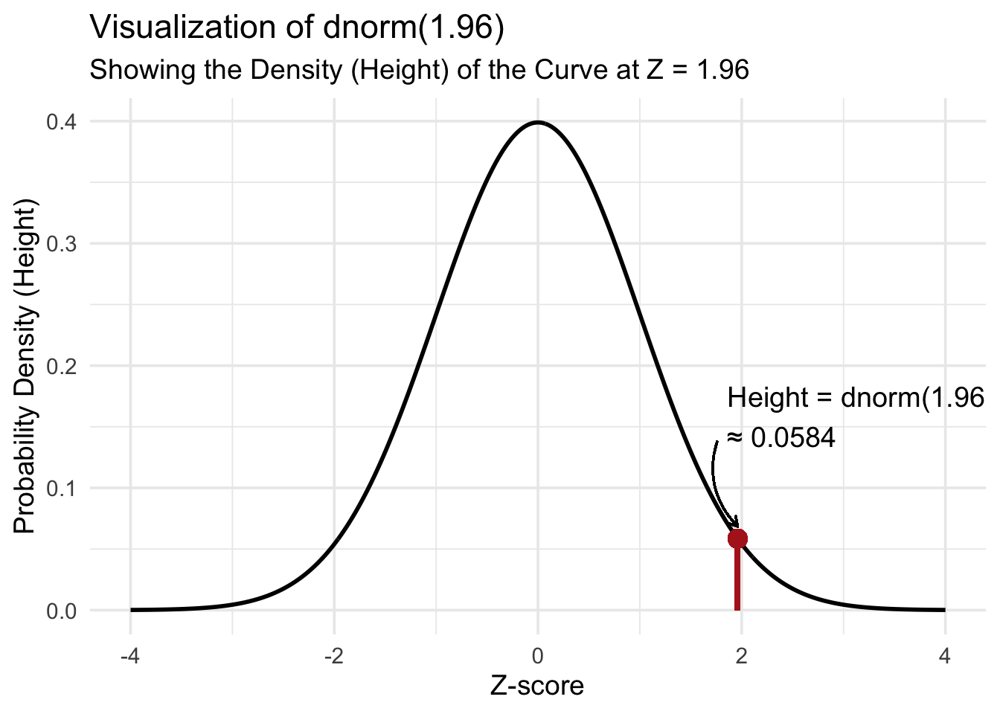
Code
library(ggplot2)mean_val <-0sd_val <-1point_z <- .5x_values <-seq(mean_val -4* sd_val, mean_val +4* sd_val, length.out =500)y_values <-dnorm(x_values, mean = mean_val, sd = sd_val)normal_df <-data.frame(x = x_values, density = y_values)density_at_point <-dnorm(point_z, mean = mean_val, sd = sd_val)ggplot(normal_df, aes(x = x, y = density)) +geom_line(color ="black", size =1) +geom_segment(aes(x = point_z, y =0, xend = point_z, yend = density_at_point),color ="firebrick",size =1.2 ) +geom_point(aes(x = point_z, y = density_at_point), color ="firebrick", size =4) +annotate("text",x = point_z -0.1, y = density_at_point +0.1,label =paste0("\n≈ ", round(density_at_point, 4)),size =5,hjust =0# Right-justify the text ) +geom_curve(aes(x = point_z -0.2, y = density_at_point +0.08, xend = point_z, yend = density_at_point +0.01),arrow =arrow(length =unit(0.2, "cm")),curvature =0.3 ) +labs(title ="Density of the Curve at Z = .5",x ="Z-score",y ="Probability Density (Height)" ) +theme_minimal(base_size =14)
Warning in geom_segment(aes(x = point_z, y = 0, xend = point_z, yend = density_at_point), : All aesthetics have length 1, but the data has 500 rows.
ℹ Please consider using `annotate()` or provide this layer with data containing
a single row.
Warning in geom_point(aes(x = point_z, y = density_at_point), color = "firebrick", : All aesthetics have length 1, but the data has 500 rows.
ℹ Please consider using `annotate()` or provide this layer with data containing
a single row.
Warning in geom_curve(aes(x = point_z - 0.2, y = density_at_point + 0.08, : All aesthetics have length 1, but the data has 500 rows.
ℹ Please consider using `annotate()` or provide this layer with data containing
a single row.
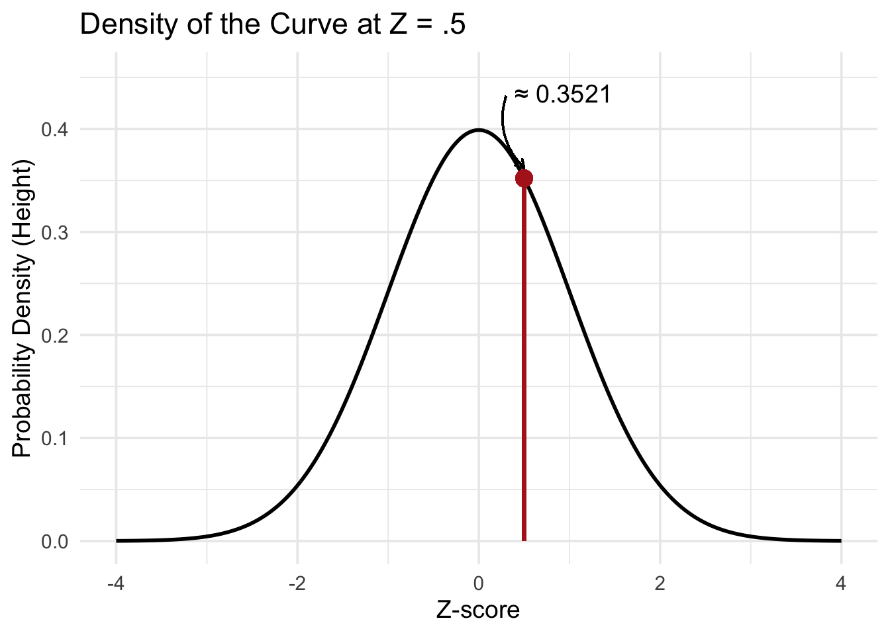
What Z-score corresponds to the ___th percentile?
qnorm(.95)
[1] 1.644854
qnorm(.975)
[1] 1.959964
qnorm(.025)
[1] -1.959964
qnorm(.999999) # one in a million
[1] 4.753424
If I want to randomly draw from some population I can use rnorm
\[X \sim \mathcal{t}(\nu)\]\[X \sim \mathcal{t}(\nu, \mu, \sigma^2)\] - New parameter, nu
Like the normal, but with larger tails.
In small samples, one finds more extreme scores than expected from if we rnorm some population parameters.
Code
# 1. Load the necessary librarieslibrary(ggplot2)library(dplyr)
Attaching package: 'dplyr'
The following objects are masked from 'package:stats':
filter, lag
The following objects are masked from 'package:base':
intersect, setdiff, setequal, union
Code
# 2. Define the range for the x-axisx_vals <-seq(-4, 4, length.out =500)# 3. Create a tidy data frame with densities for each distributionplot_data <-tibble(x = x_vals,`Normal (df = Inf)`=dnorm(x),`t (df = 1)`=dt(x, df =1),`t (df = 5)`=dt(x, df =5),`t (df = 30)`=dt(x, df =30)) %>%# Pivot the data into a long format suitable for ggplot tidyr::pivot_longer(cols =-x,names_to ="distribution",values_to ="density" ) %>%# Make the 'distribution' column an ordered factor for a clean legendmutate(distribution =factor(distribution, levels =c("t (df = 1)", "t (df = 5)", "t (df = 30)", "Normal (df = Inf)")))# 4. Create the plotggplot(plot_data, aes(x = x, y = density, color = distribution)) +geom_line(size =1.2) +scale_color_manual(values =c("t (df = 1)"="firebrick", "t (df = 5)"="orange", "t (df = 30)"="steelblue", "Normal (df = Inf)"="black")) +labs(subtitle ="The t-distribution approaches the normal distribution as df increase.",x ="Value (Z-score)",y ="Probability Density",color ="Distribution" ) +theme_minimal(base_size =14) +theme(legend.position ="bottom")
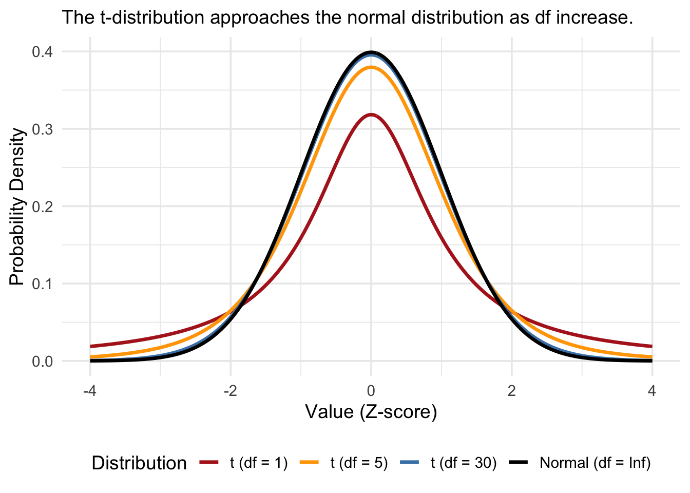
Code
# Load the ggplot2 library for plottinglibrary(ggplot2)# --- 1. Define the Population ---# We'll create a large, normally distributed population.population_mean <-0population_sd <-1population_size <-100000population <-data.frame(value =rnorm(population_size, mean = population_mean, sd = population_sd))# --- 2. Set Simulation Parameters ---sample_size <-5# A small sample sizen_simulations <-10000# Number of samples to draw# Create a vector to store the t-statistic from each samplet_statistics <-numeric(n_simulations)# --- 3. Run the Simulation ---for (i in1:n_simulations) {# Draw a random sample from the population my_sample <-sample(population$value, size = sample_size)# Calculate the sample mean and sample standard deviation sample_mean <-mean(my_sample) sample_sd <-sd(my_sample)# Calculate the t-statistic for this sample# This measures how many standard errors the sample mean is from the population mean. t_stat <- (sample_mean - population_mean) / (sample_sd /sqrt(sample_size))# Store the result t_statistics[i] <- t_stat}# Create a data frame of the resultssimulation_results <-data.frame(t_stat = t_statistics)# --- 4. Visualize the Results ---ggplot(simulation_results, aes(x = t_stat)) +# Plot the density of our simulated t-statisticsgeom_density(aes(color ="Simulated t-stats"), fill ="skyblue", alpha =0.5, size =1) +# Overlay the standard NORMAL distribution for comparisonstat_function(fun = dnorm,args =list(mean =0, sd =1),aes(color ="Normal Distribution"),linetype ="dashed",size =1.2 ) +scale_color_manual(name ="Distribution",values =c("Simulated means"="black", "Theoretical t-dist (df=4)"="red", "Normal Distribution"="darkgreen") ) +labs(title ="The t-distribution, not the normal.",x ="standardized estimates",y ="Density" ) +xlim(-4,4) +theme_minimal(base_size =14) +theme(legend.position ="top")
Warning: Removed 170 rows containing non-finite outside the scale range
(`stat_density()`).
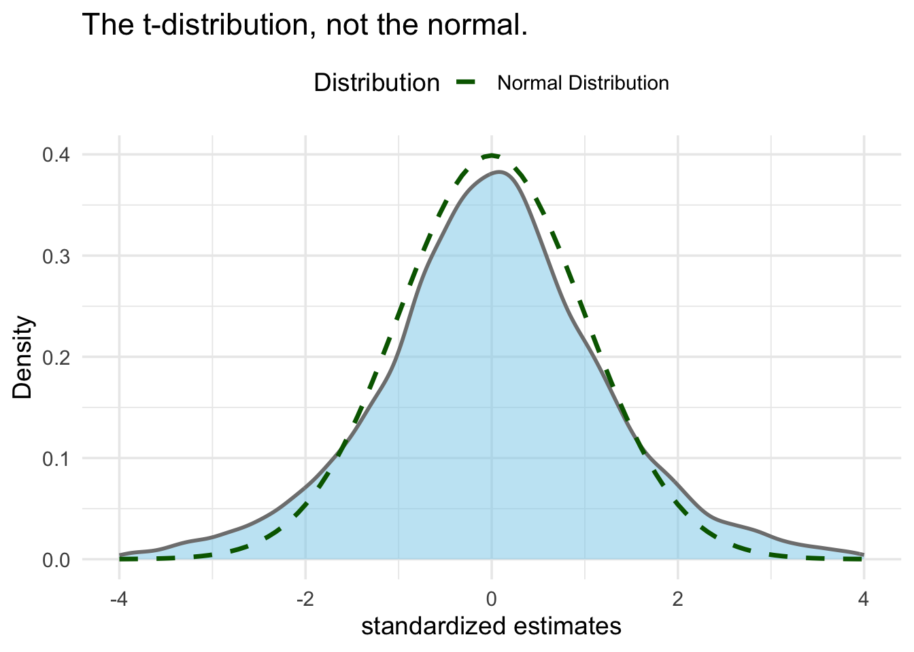
pt(1.96, df =1)
[1] 0.8498286
pnorm(1.96)
[1] 0.9750021
pt(1.96, df =20)
[1] 0.9679609
Code
# 1. Load the necessary librarieslibrary(ggplot2)library(dplyr)library(tidyr)
Attaching package: 'tidyr'
The following object is masked _by_ '.GlobalEnv':
population
Code
# 2. Define the range for the x-axisx_vals <-seq(-4, 4, length.out =500)# 3. Create a tidy data frame with CUMULATIVE probabilities# We now use pnorm() and pt() instead of dnorm() and dt()plot_data_cdf <-tibble(x = x_vals,`Normal (df = Inf)`=pnorm(x),`t (df = 1)`=pt(x, df =1),`t (df = 5)`=pt(x, df =5),`t (df = 30)`=pt(x, df =30)) %>%# Pivot the data into a long format suitable for ggplotpivot_longer(cols =-x,names_to ="distribution",values_to ="cumulative_prob" ) %>%# Make the 'distribution' column an ordered factor for a clean legendmutate(distribution =factor(distribution, levels =c("t (df = 1)", "t (df = 5)", "t (df = 30)", "Normal (df = Inf)")))# 4. Create the plotggplot(plot_data_cdf, aes(x = x, y = cumulative_prob, color = distribution)) +geom_line(size =1.2) +scale_color_manual(values =c("t (df = 1)"="firebrick", "t (df = 5)"="orange", "t (df = 30)"="steelblue", "Normal (df = Inf)"="black")) +labs(title ="Normal vs. t-Distribution CDFs",x ="Value (Z-score)",y ="Cumulative Probability P(X <= x)",color ="Distribution" ) +theme_minimal(base_size =14) +theme(legend.position ="bottom")
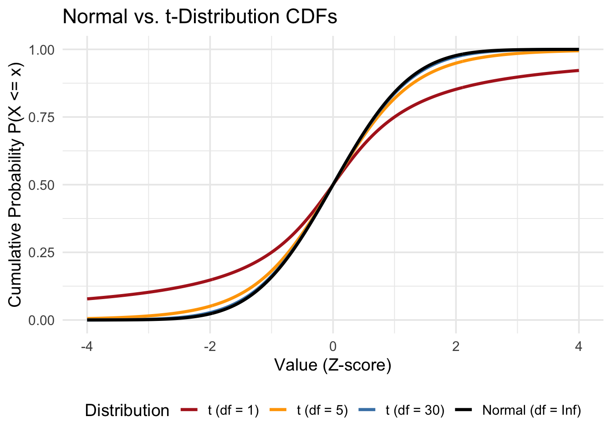
We will use t-distributions a lot (coefs, CIs)! It is used when we have 1) small samples and/or 2) unknown population variance. The latter is almost always true.
The sample SD can be (s) can be a poor estimate of the true SD (σ). Just by random chance, you can get a sample where the data points are unusually close together, resulting in an s that is much smaller than the true σ.
When this happens, the denominator of the standardized score becomes very small, and thus produces a very large value
History of the t-distribution
Gosset, Guinness, and Student
F-distribution
\[X \sim F(\nu_1, \nu_2)\]
Code
# 1. Load the necessary librarieslibrary(ggplot2)library(dplyr)library(tidyr)# 2. Define the range for the x-axis# The F-distribution is only defined for positive valuesx_vals <-seq(0, 5, length.out =500)# 3. Create a tidy data frame with densities for each distribution# We use df() to get the density of the F-distributionplot_data_f <-tibble(x = x_vals,`F(df1=3, df2=5)`=df(x, df1 =3, df2 =5),`F(df1=10, df2=20)`=df(x, df1 =10, df2 =20),`F(df1=500, df2=10)`=df(x, df1 =500, df2 =10)) %>%# Pivot the data into a long format suitable for ggplotpivot_longer(cols =-x,names_to ="distribution",values_to ="density" ) %>%# Remove cases where density is infinite (can happen at x=0 for low df)filter(is.finite(density))# 4. Create the plotggplot(plot_data_f, aes(x = x, y = density, color = distribution)) +geom_line(size =1.2) +labs(title ="F distribution (df1, df2)",x ="F-value",y ="Density",color ="Distribution" ) +theme(legend.position ="top")
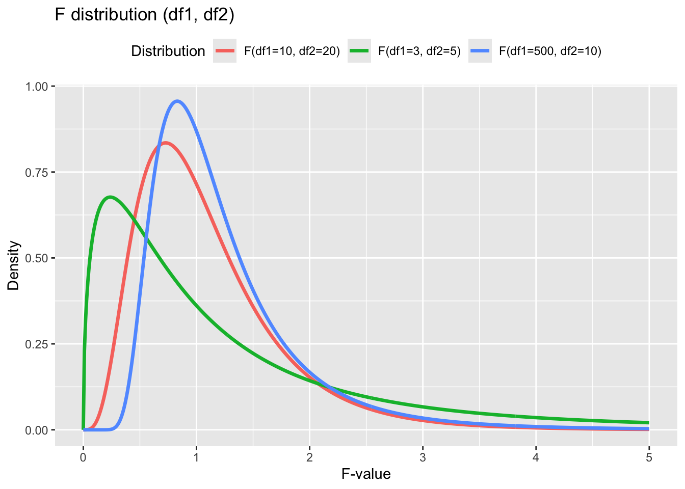
F distribution is used a lot in this class:
We will use it for comparing two (or more) different regression models from one another
Historically, used for ANOVA (which is regression with categorical variables)
Overall model fit (does your model explain anything?)
Can be used to compare two variances
Chi-square distribution
Take a set of independent random variables that all come from a standard normal distribution, square each of them, and then add them all up, the resulting sum follows a chi-square distribution
# Set parametersnum_samples <-10000degrees_freedom <-4# Use replicate() to run the expression num_samples timeschi_square_sums <-replicate(n = num_samples,expr =sum(rnorm(n = degrees_freedom)^2))# Create a dataframe and plotsimulated_data_from_normal <-data.frame(chi_square_value = chi_square_sums)# Plot a histogram (code is identical to the one above)ggplot(simulated_data_from_normal, aes(x = chi_square_value)) +geom_histogram(aes(y = ..density..), bins =50, fill ="grey", color ="black") +stat_function(fun = dchisq, args =list(df = degrees_freedom), color ="red", size =1.2) +labs(title =paste("Chi-Square Distribution Built from Normal Deviates (df =", degrees_freedom, ")"),x ="Chi-Square Value",y ="Density" ) +theme_minimal(base_size =14)
Warning: The dot-dot notation (`..density..`) was deprecated in ggplot2 3.4.0.
ℹ Please use `after_stat(density)` instead.
As df increases, the shape becomes more normal. Why?
Create F from chi squared
Code
# 1. Load the necessary librarylibrary(ggplot2)# 2. Set the parameters for the simulationnum_samples <-10000df1 <-5# Numerator degrees of freedomdf2 <-20# Denominator degrees of freedom# --- DATA PREPARATION ---# 3a. Create the SIMULATED data (from the chi-square derivation)chi_square_1 <-rchisq(n = num_samples, df = df1)chi_square_2 <-rchisq(n = num_samples, df = df2)f_values <- (chi_square_1 / df1) / (chi_square_2 / df2)simulated_f_df <-data.frame(f_value = f_values)# 3b. Create the THEORETICAL data for the smooth curvex_theoretical <-seq(0, 5, length.out =500)theoretical_f_df <-data.frame(x = x_theoretical,density =df(x_theoretical, df1 = df1, df2 = df2))# --- PLOTTING ---# We will build the plot by adding layers from our two different dataframesggplot() +# Layer 1: The histogram from the SIMULATED datageom_histogram(data = simulated_f_df, aes(x = f_value, y =after_stat(density)), # Use after_stat() for modern ggplotbins =50, fill ="blue", color ="black", alpha =0.7 ) +# Layer 2: The line from the THEORETICAL datageom_line(data = theoretical_f_df,aes(x = x, y = density),color ="black",size =1.2 ) +# Zoom in on the main part of the distributioncoord_cartesian(xlim =c(0, 5)) +labs(title ="Simulated F-Distribution F(5,20) from Chi-square ",x ="F-Value",y ="Density" ) +theme_minimal(base_size =14)
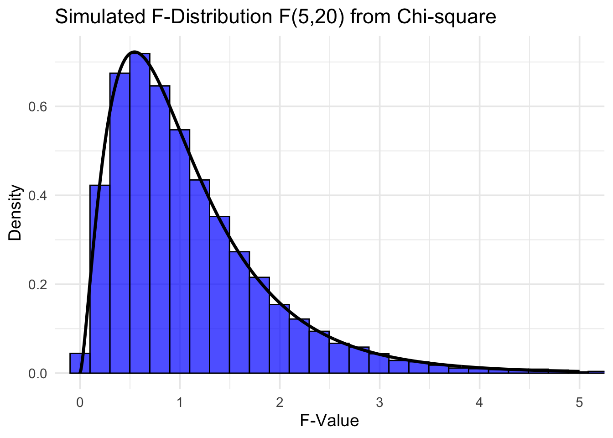
Chi square distirbution
Also is used a lot in this class:
General/more applicable test for model comparisons
Chi-square test of association (categorical correlation)
Goodness of fit (observed counts differ from expected)